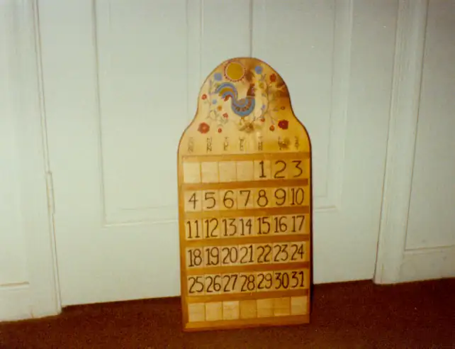

Home / Krehbiels / 020 Krehbiel Roll 1983 Christmas / kre020-00007
kre020-00007
← Return to 020 Krehbiel Roll 1983 Christmas
← kre020-00006 kre020-00008 →
1983 Christmas 10. Dad made that, too. I helped paint some of the holidays. This particular calendar was the prototype. Dad intended to make one for each of us four kids but I think he only got to Mike, Richard, and David. So I ended up with the prototype.

Actual size: 4.28" × 3.28" · Scanned at: 150 dpi · 0.32 MP (642×492) · Image date: 19 Aug 2005 · Comment date: 19 Aug 2005
Copyright © 2005–2026 Thomas Krehbiel. Images are freely distributable for personal use. For more information about these images contact Thomas Krehbiel (tkrehbiel@gmail.com).
Photos were scanned at either 300dpi or 600dpi, depending on the quality of the photograph. Slides were scanned at 1800dpi. Documents were scanned at 100dpi or 150dpi. Photoshop enhancements: most images have had their contrast improved. Some color photos were corrected to restore color balance. Some blurry images were mildly sharpened. Occasionally dust, scratches, and blemishes were removed digitally.
{kind=link}